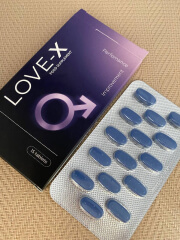
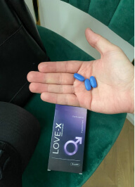

"Vindecarea impotenței și a prostatitei în 6-8 săptămâni este posibilă!" Un medic din Germania a criticat urologii autohtoni și a explicat tratamentul folosit în clinicile europene avansate (disponibil acum și în România)
Actualizat:
Fiecare bărbat se teme să afle despre impotență și probleme de prostată. Este dificil să le spui nu numai celor dragi, ci și medicilor tăi despre acest lucru. Cu toate acestea, numărul bărbaților bolnavi care se cred inferiori crește în fiecare an. Unii dintre ei apelează la urologi. Dar este eficient? Un renumit urolog androlog din Ministerul Sănătății din UE a zburat la București cu un nou remediu pentru impotența masculină. El era nemulțumit de medicina locală. Citiți mai multe în acest interviu exclusiv.
Perioada de activitate: 26 de ani
Reporter: Bună ziua, Dr. Meyer. Știm că sunteți specializat în bolile prostatei și în tratamentul impotenței. Am auzit despre contribuția dumneavoastră la medicină. Dar de ce ați venit în mod special în România?
Dr. Meyer: Bună ziua. Potrivit statisticilor oficiale, anume în Romania numărul bărbaților diagnosticați cu impotență este amețitor. Cel mai adesea se dezvoltă din cauza inflamației prostatei (prostatită) sau a tulburărilor circulatorii legate de vârstă. Gândiți-vă la asta: unul din doi bărbați cu vârsta de peste 40 de ani observă semne premature de impotență și în 70% din încercări nu poate avea un raport sexual complet. Acestea sunt cifre oficiale de la Ministerul Sănătății. Înfricoșător, nu-i așa?
Ceea ce este și mai înspăimântător este că în fiecare an scade limita de vârstă pentru bărbații cu disfuncție erectilă. Este posibil să aveți disfuncție erectilă chiar și la vârsta de 30 de ani. Și asta doar în România. Cele mai avansate țări europene, inclusiv Germania, au stabilit deja un singur remediu pentru această problemă. Noi, împreună cu colegii noștri, am venit special pentru a vorbi despre asta.
În 2021, peste 2.145.000 de bărbați rezidenți în România au suferit de disfuncție erectilă.
Reporter: Dar nu există medicamente eficiente sau alte tratamente în țara noastră?
Dr. Meyer: Am fost îngrozit când am aflat despre tratamentul impotenței și al prostatitei în țara dumneavoastră. Am comunicat cu specialiștii din clinica Prof. Dr. Theodor Burghele, am înțeles că este cea mai buna clinică de la voi. Știați că aici încă se mai prescrie Viagra? Vă dați seama că nu este un medicament, ci un produs sintetic care are un efect temporar? Și masaj de prostată sau exerciții terapeutice? Acest lucru era relevant acum 15-20 de ani, când nu existau alternative. Cu acest tratament, doar 7% dintre pacienți simt o ameliorare și se întorc la viața lor normală.
Reporter: Ce e în neregulă cu Viagra? Este foarte bine primită de o mulțime de oameni.
Dr. Meyer: Glumiți? Știți ce presupune să luați Viagra tot timpul? Ceea ce urmează să spun poate fi un șoc pentru cei deosebit de impresionabili, dar spun doar adevărul. 95% dintre bărbați se confruntă cu dureri de cap, roșete și chiar pierderea simțului mirosului de fiecare dată când iau acest stimulent. Aceste efecte secundare pot dura ore sau chiar zile. Și asta nu e tot! Viagra crește riscul de atac de cord sau de erecție prelungită (aproximativ 4 ore). Acesta din urmă amenință să provoace gangrena penisului, care poate duce la amputare. Viagra este de mult timp ilegală în Germania!
Jurnalist: E îngrozitor! Oare nu există o alternativă sigură?
Dr. Meyer: Este! De aceea sunt aici. Timp de mai mulți ani, eu și colegii mei am căutat o formulă pentru un medicament care crește producția de testosteron și este garantat pentru a îmbunătăți erecția. Am constatat că un amestec de mai multe ingrediente naturale produce rezultate de durată:
- se îmbunătățește duritatea penisului,
- orgasmul devine mai intens,
- erecția nu dispare în timpul actului sexual.
Am folosit o nouă tehnologie de extracție pentru a obține concentrația corectă de substanțe. Ingredientele naturale cresc producția de hormoni sexuali masculini și normalizează circulația sângelui în zona pelviană.
Complexul se numește Love-X. Acestea sunt capsule albastre. Această formă este mai ușor de administrat și se absoarbe mai bine decât celelalte.
Reporter: Vreți să spuneți că această dezvoltare va vindeca impotența și prostatita fără masaj, operație sau remedii dubioase precum Viagra?
Dr. Meyer: Bineînțeles că da. Acestea nu sunt cuvinte în vânt. 87% dintre clinicile din Germania, Italia și Suedia prescriu acestea capsule pacienților lor de câteva luni. Sunt mii de bărbați mulțumiți și, cel mai important, sănătoși.
Reporter: Nu mă înțelegeți greșit, dar medicamentul Love-X e sigur pentru sănătate?
Dr. Meyer: Securitatea Love-X este garantată. Produsul este certificat oficial ca fiind sigur de către Organizația Mondială a Sănătății și Ministerul Sănătății din Uniunea Europeană. Este licențiat. Formula a fost dezvoltată de cei mai buni oameni de știință din Europa în domeniul urologiei.
Love-X - tratament pentru prostatită și impotență creat în conformitate cu standardele europene stricte. Fără efecte secundare sau dependență. Cu rezultate garantate după administrare.
Capsulele sunt fabricate în Italia și Spania.
Reporter: Am dreptate să presupun că trebuie de luat un întreg curs pentru a fi complet vindecat și toate simptomele impotenței să dispară?
Dr. Meyer: Absolut! Spun acest lucru fiecărui pacient: "Nu există o pastilă magică pentru această boală". Și impotența este o boală. Viagra funcționează rapid, dar efectul său nu este permanent, ci oferă doar o senzație temporară de erecție. Cu medicamentul nostru Love-X lucrurile sunt diferite. Se ia câte o capsulă dimineața și seara, după masă, în fiecare zi, timp de 4-8 săptămâni. Este posibil să nu observați rezultate în prima zi, dar cu fiecare capsulă pe care o luați, încrederea dumneavoastră va crește.
Datorită lui Love-X Veți obține un libido, durata actului sexual crește și nu există ejaculare prematură. Dacă sunteți deranjat de prostatită, inflamația dispare fără să vă afecteze rinichii (cred că știți cât de periculoase sunt diureticele și antiinflamatoarele).
După 35 de zile de administrare, veți putea face dragoste timp de 1-2 ore pe zi cu o erecție solidă fără dureri inghinale și vă veți simți din nou ca un bărbat complet).
Dr. Meyer: Nu am programări la Spitalul Profesor dr. Theodor Burghele, dar am efectuat mai multe consultații pentru urologi la clinica dată. Echipa mea și cu mine am recomandat cu tărie prescrierea Love-X la toți pacienții cu aceste diagnostice. Începând de mâine, vom merge și în alte spitale din țară. Am adus programul Sănătatea Bărbaților pentru români la preț redus. Trebuie să existe o adevărată medicină europeană aici!
Reporter: Ați făcut o treabă excelentă! Spuneți-ne mai multe despre acest program.
Dr. Meyer: Din păcate, acest medicament nu este disponibil în farmacii. Din câte știu eu, producătorul și lanțurile de farmacii nu au putut să se înțeleagă asupra condițiilor de vânzare. Farmaciile au cerut o marjă prea mare, dar pentru noi este imposibil. Sănătatea ar trebui să fie accesibilă. Acesta este motivul pentru care Love-X nu este disponibil în farmacii.
Dar am vești bune. Repet: Ministerul Sănătății din UE a lansat Programul pentru sănătatea bărbaților. Veți putea cumpăra produsul la cel mai mic preț posibil. Am decis să acordăm produsului o reducere de 50%, astfel încât acesta să câștige popularitate. Acesta este practic costul inițial al medicamentului . Coletul va fi livrat direct la domiciliul dumneavoastră, oriunde în România.
Dar pentru a cumpăra Love-X trebuie să îndepliniți o serie de condiții:
-
1.Trebuie să fiți rezident în România. Acest program este valabil numai pentru rezidenții din țara dumneavoastră. Nu vom putea trimite bunuri în afara țării dumneavoastră.
-
2.Puteți cumpăra Love-X Numai pentru uz personal. Fără revânzare.
-
3.Vă recomandăm să comandați întregul curs al produsului deodată, deoarece următorul stoc nu va fi trimis decât peste câteva luni. Aproximativ 12.000 de persoane au făcut deja o precomandă, așa că ar trebui să vă grăbiți.
Reporter: Există deja bărbați care au devenit participanți la acest program?
Dr. Meyer: Bineînțeles că da! Programul a început săptămâna trecută, iar astăzi am trimis deja aproape 300 de cursuri în diferite orașe din România. Mă bucur că bărbații din Romania își tratează sănătatea reproductivă cu atâta responsabilitate.
Comentariu editorial:
Redacția noastră l-a contactat pe unul dintre bărbații care a cumpărat cursul Love-X de șase săptămâni. Acesta a cerut să nu-i divulgăm datele personale, dar am reușit să obținem comentariul lui.
Am fost la urologul meu săptămâna trecută. Am vrut să mă plâng că tratamentul nu funcționează, încă mă duc la toaletă sângerând, mă doare când urinez și abia am erecție. Medicul nu a insistat asupra tratamentului său, dar mi-a sugerat să cumpăr Love-X. Am completat formularul și am comandat. Am primit coletul a doua zi. Ce pot să spun. Am administrat timp de aproape o săptămână. Și efectul este într-adevăr prezent! Am o erecție de dimineață (nu am mai avut una în ultimii 2 ani). Durerea în zona inghinală este mai mică în fiecare zi. Mă simt mai bine. Voi lua mai mult.
Jurnalist: Cititorii noștri pot comanda Love-X prin intermediul formularului oficial al Ministerului Sănătății. Îl lăsăm mai jos pentru ca cititorii să nu dea peste escroci. Vă mulțumim, Domnule Doctor Mayer, pentru acest interviu util pentru publicația noastră. Acum toată lumea va ști că impotența și prostatita pot fi vindecate în aceste zile fără prea mult efort.
Dr. Meyer: Cu bine! Vă mulțumim pentru că ați contribuit la promovarea noului produs.
Aici se încheie interviul nostru cu Dr. Colman Meyer. Dacă cititorii noștri mai au întrebări, le pot pune în cadrul discuției. Dr. Meier a promis că va răspunde la ele dacă va avea timp liber. Interpretul nostru îl va ajuta. Mai jos am lăsat un formular pentru achiziționarea capsulelor originale Love-X. Sănătate!
Grăbiți-vă! Reușiți sa achiziționați Love-X la prețul de cost.

-
George NWow!
-
AndreiDr. Mayer, spuneți-mi, dacă pierd câteva zile, îmi voi pierde din nou erecția?Dr. Meyer:Bună ziua. Nu, 1-2 zile nu vă vor afecta rezultatele, dar vă recomand să urmați întregul curs fără pauze lungi. Unele persoane au nevoie doar de 5 săptămâni, dar dumneavoastră aveți nevoie de 6 săptămâni pentru a consolida efectul. Asumă-ți responsabilitatea pentru sănătatea dumneavoastră!AndreiDe câte pachete am nevoie pentru șase săptămâni?Dr. Meyer:1 pachet - 1 săptămână. Acesta este cel mai bun regim posibil de urmat.
-
Mihai R.Spuneți-mi, am fost diagnosticat cu disfuncție erectilă. Ce înseamnă acest lucru?Dr. Meyer:Bună ziua, acest lucru este echivalent cu impotența. Love-X este conceput pentru a trata acest diagnostic.Mihai R.Și dacă am deja 50 de ani?Dr. Meyer:Potența dumneavoastră poate fi slăbită din diverse motive, dar nu este niciodată prea târziu să o recuperați. Produsul nostru este potrivit pentru bărbați de toate vârstele.
-
IncognitoNu se poate! Credeam că nu vom avea niciodată acest medicament. Sora mea locuiește în Berlin, și acum trei luni mi-a adus Love-X . Am băut tot cursul. Nu știu ce m-aș fi făcut dacă nu ar fi fost acest medicament.Răduțu CerchezCum merge treaba? Este totul în regulă?IncognitoCe ar putea fi în neregulă? Love-X. În Germania, este de fapt un medicament autorizat oficial. Chiar dacă ai vrea, nu găsești Viagra în farmacii.Răduțu CerchezMă refer la efectele secundareIncognitoNu a fost nimic. Îți spun eu. Nu e o porcărie de sex shop netestată. Este un medicament testat și autorizat. Este grozav.
-
Cristina BivolTrebuie să îi arăt acest articol fostului. Obișnuia să își bage bile de gheață în fund (avea chiar și niște forme). Se presupunea că acestea au un efect asupra prostatei și îi oferă o erecție mai bună. Tot ce trebuia să faci era să cumperi aceste capsuleUtilizatorEste o bătaie de joc ahahah.
-
SergiuChiar funcționează! Mi-a plăcut efectul!

-
NicolaeSalutări tuturor! Mulțumesc celor care va citi absurdul meu, as dori pe cineva cu care să mă împărtășesc, și o părere sau un sfat. Am acum 35 de ani și am avut prostatită timp de 3 ani. Sincer, nu m-am simțit niciodată mai rău. Este o durere infernală. În toți acești ani am avut parte de același tratament. Injecții în ambele fese în fiecare zi și supozitoare. Dar nu mai pot cheltui atât de mult, am o familie de hrănit. După o singură injecție, am intrat în șoc anafilactic. Soția mea a spus că eram verde, brațele îmi amorțiseră complet, iar pulsul meu era de 50. M-am săturat să trăiesc așa... Ce ar trebui să fac?Victor M.Cumpără Love-X. Medicul a vorbit îndelung despre remediu. De ce aștepți? Livrarea mea a sosit deja.NicolaeCa să fiu sincer, mi-e teamă să cheltuiesc banii...Victor M.Cât de mult ai irosit deja în atâția ani? Sunt sigur că atunci când programul se va încheia, medicamentul va costa de câteva ori mai mult. În acest moment este vândut la preț redus.NicolaeCred că voi comanda...
-
LucaDr. Mayer, puteți sugera remedii pentru a preveni prostatita?Dr. Meyer:Bună ziua. Este foarte simplu. Trebuie să deveniți activi și să faceți exerciții fizice. Chiar dacă munca dvs. este sedentară, găsiți o ocazie să vă ridicați și să vă plimbați periodic. De asemenea, vă sfătuiesc să urmați un curs de medicină preventivă dacă sunteți la risc (peste 40 de ani, cu un stil de viață sedentar).LucaVă mulțumim!